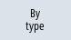

When you are working with many tools, with large magazines or several magazines, it is useful to display the tools sorted according to different criteria. Then you will be able to find a specific tool more easily in the lists.
Procedure
 | 1. | Select the "Parameter" operating area. |
| ...  | 2. | Press the "Tool list", "Tool wear" or "Magazine" softkey. |
 | 3. | Press the ">>" and "Sort" softkeys. |
| | | The lists are displayed sorted numerically according to magazine location. |
|  | 4. | Press the "Acc. to type" softkey to display the tools arranged by tool type. Identical types are sorted according to their radius. |
| | | Press the "Acc. to name" softkey to display the tool names in alphabetical order. The replacement tool numbers are used to sort tools with the same names. |
| | | - OR - |
| | | Press the "Acc. to T number" softkey to display the tools sorted numerically. |
| | | The list is sorted according to the specified criteria. |
 | Machine manufacturer Please refer to the machine manufacturer's specifications. |